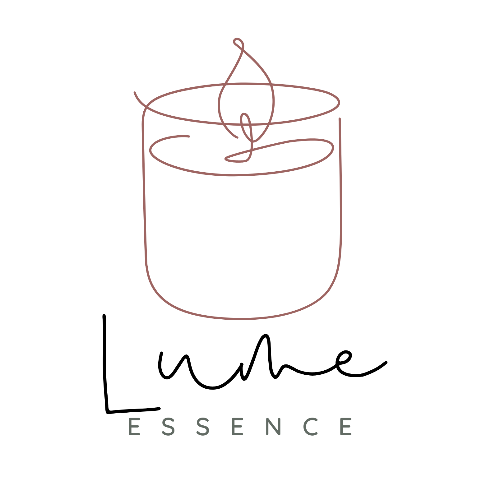

Nosso propósito é claro e profundo: ser o portal para um instante de beleza, calma e autocuidado. Mais que simplesmente produzir velas e aromas, a Lume Essence é um manifesto de bem-estar, fundamentado na crença de que a chama tem o poder de acender a serenidade que reside dentro de nós.
Nossa jornada começou de forma artesanal, em um ateliê caseiro. Eleanor dedicou-se a dominar a arte da vela, descobrindo que a verdadeira paz reside na pureza e simplicidade dos elementos. Cada composição é pensada para transformar o simples ato de acender uma vela em um verdadeiro ritual de pausa. Com o reconhecimento, expandimos a produção, mas nosso pilar se mantém inabalável: o rigor do processo manual. Cada etapa, da infusão da essência à fixação do pavio, preserva a qualidade e a intenção original. Crescemos em escala, mantendo nossa missão: oferecer um porto seguro perfumado onde o amor-próprio encontra a calma.
A cada reconhecimento expandimos a produção, e permanecemos com o nosso pilar. Cada etapa, da infusão da essência à fixação do pavio, mantém o rigor do processo manual. A marca cresceu em escala, mas manteve inabalável a sua missão original: oferecer um porto seguro perfumado onde o amor próprio se encontra com a calma.
Cada acender do pavio é um convite para desacelerar. É uma oportunidade para permitir que a suavidade ilumine a alma, reafirmando que merecemos a calma em nós.